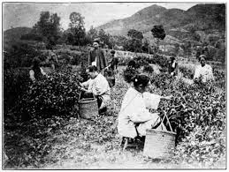
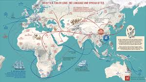
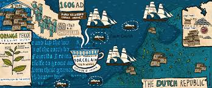
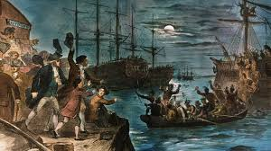

History Of Tea
The history of tea stretches back thousands of years and spans multiple cultures, continents, and civilizations. Here’s an overview of its journey:
1. Origins in China (2737 BCE)
The most widely accepted legend credits the discovery of tea to Chinese Emperor Shen Nong around 2737 BCE. According to the tale, while the emperor was boiling water, some leaves from a wild tea tree blew into his pot. Intrigued by the resulting infusion, he tasted it and found it refreshing, thus beginning tea's long history in China.
Tea began as a medicinal drink in ancient China, believed to have healing properties. It was used by monks and scholars for its calming effects and ability to aid meditation. By the Tang Dynasty (618–907 CE), tea drinking had become an essential part of Chinese culture, and its popularity spread.
2. The Spread to Japan (8th Century)
Tea was introduced to Japan by Buddhist monks who traveled to China for religious study during the Tang and early Song Dynasties. They brought back tea seeds and plants, using the beverage to aid in their meditation.
Over time, tea became an important part of Japanese culture. The Japanese tea ceremony, or chanoyu, was developed around the 15th century by the Zen monk Sen no Rikyū, who imbued the practice with philosophical and spiritual elements emphasizing simplicity, mindfulness, and respect.
3. Tea’s Journey to Europe (16th and 17th Century)
Tea first reached Europe through Portuguese and Dutch traders in the early 16th century. It was introduced to the court of the Portuguese king in the 1560s and later to Holland, where it gained popularity among the wealthy.
The English, however, became the most prominent tea drinkers in Europe. In 1662, when King Charles II of England married Catherine of Braganza, a Portuguese princess, she brought her love for tea to the English court, popularizing the drink. By the 18th century, tea was a common beverage in Britain, though its high cost made it a luxury for the upper classes.
4. The British East India Company and Tea Trade (18th and 19th Century)
Tea became an essential part of British trade. The British East India Company, which had a monopoly on trade between Britain and the East, began importing large quantities of tea from China. As demand grew, tea became increasingly important to the British economy, though this dependence on China also led to tensions.
In the 19th century, Britain’s trade deficit with China due to tea imports grew significantly. To address this, Britain began exporting opium to China, which led to the Opium Wars (1839–1842 and 1856–1860). As a result, Britain gained control over Hong Kong and expanded its tea trade.
Seeking to reduce reliance on Chinese tea, the British turned to India, which was then a British colony. In the mid-19th century, the British established large tea plantations in Assam and Darjeeling, and by the end of the century, India had become one of the world’s largest tea producers.
5. The Boston Tea Party (1773)
Tea played a pivotal role in American history during the lead-up to the American Revolution. In 1773, in response to the British government imposing taxes on tea without American representation in Parliament, American colonists protested by dumping an entire shipment of tea into Boston Harbor. This event, known as the Boston Tea Party, became a symbol of resistance and helped spark the revolution.
